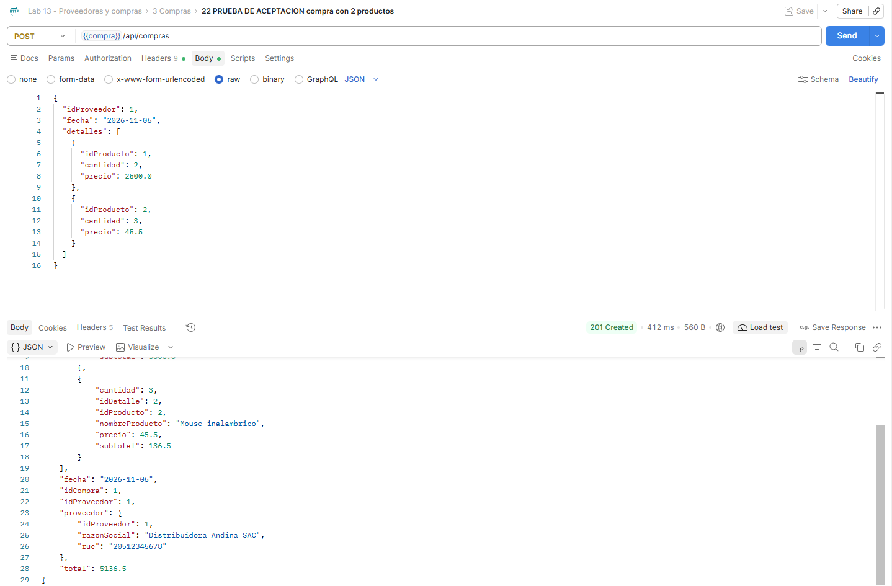

Tres microservicios con Spring Boot, Eureka y Feign · Renzo Raúl León Fernández · Sección D
Objetivo: crear Proveedor, Producto y Compra con detalles, cada uno como un servicio independiente con su propia base de datos.
CRUD de proveedores. Valida el RUC y que no se repita.
CRUD de productos. Antes de guardar, confirma que el proveedor exista.
Registra la compra con sus detalles y calcula subtotales y total.
Proveedor, fecha y la lista de detalles.
Se consulta a proveedor-service.
Debe existir y ser de ese mismo proveedor.
Subtotal = cantidad × precio. Total = suma.
La compra y sus detalles, juntos.
Los tres arriba. Cada uno responde con su propia base.
11 dígitos, empieza con 10, 15, 17 o 20.
Dos proveedores no comparten RUC.
Nombre y razón social son obligatorios.
Cada detalle necesita cantidad mayor a 0.
No se compra un producto ajeno.
Proveedor, producto o compra inexistente.

Ya existía una base con el mismo nombre, creada en una práctica anterior, y su tabla tenía otras columnas.
Cada microservicio con una sola responsabilidad y su propia base: un cambio no obliga a tocar los demás.
Eureka evita escribir direcciones y puertos fijos: cada servicio se encuentra por su nombre.
Con Feign, consultar a otro servicio es declarar una interfaz, casi como escribir un controlador.
Validar con DTO y un manejador general da mensajes claros y el código HTTP correcto.
Los perfiles cambian de ambiente tocando solo la configuración, no el código.
Pruebas en Postman con el resultado esperado.
¿Preguntas?